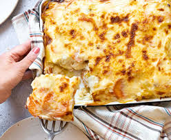

Gratin

Description
Le gratin estun plat italien
Il est aussi délicieux que les lasagnes
Ingrédients
- pomme de terre
- tomates
- assaisonnements
- viande hachée
- autres ingrédients secrets
Etapes
la préparation contient des simiilitudes avec celle des lasagnes
- Cuire la viande hachée
- chauffer de l'eau et bouillir les pates
- Rapper le frommage
- prendre un moule et poser couche par couche : pates, viande hachée, frommage
- Repeter le processus jusqu'à remplir le moule
- Enfourner tout à 170°
Home